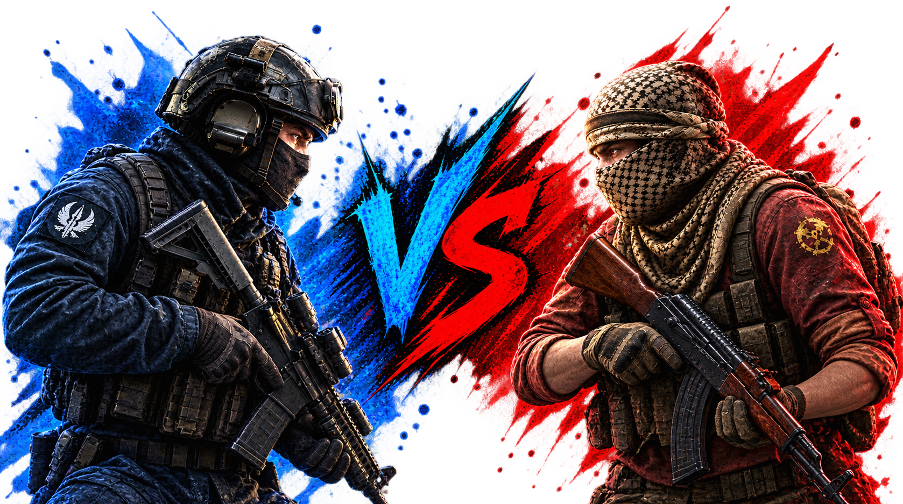

THE PLAYER IS THE VARIABLE
READTHE ROUND.
A stripped-back tactical companion for players who take the details seriously. Built for focus, clean sessions, and better practice.
EXPLORETHE SYSTEM↓
REAL-TIME
MODULE OVERLAY.
Experience the lightweight perception suite in real time. Configure individual ESP flags, distance scaling, and entity targets live on canvas.
MASTER YOUR
SKILLS,
NOT THE SOFTWARE.
Software can reveal the vectors, but it will never build your instincts. Real mastery isn't borrowed—it's forged round after round.

VOLD LINE
CORE ARCHITECTURE.
Experience every feature in real-time. Click any capability on the left console to test drive its live tactical overlay and targeting view.
Smart Aim Helper
Automatically moves your aim toward the nearest enemy smoothly and naturally. You control how wide it reaches and how fast it kicks in. Hold left-click to activate it only when you're shooting.
05 / SYSTEM STATUS
LIVE STATUS
& COMPATIBILITY.
Real-time tracking of Counter-Strike 2 game updates and software compatibility status.
Checking compatibility with latest CS2 update...
LOADING RELEASES...
Fetching release logs from GitHub.
RELEASE CHANNEL / 001
READY WHEN
YOU ARE.
This is a front-end concept. Connect your real app build, documentation, changelog, and support links before publishing.